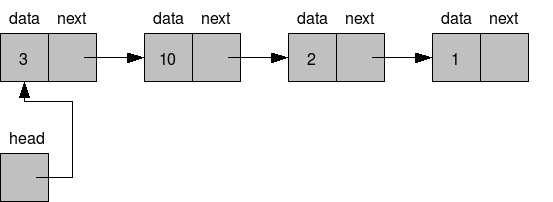

Estrutura de Dados
São um modo particular de armazenar e organizar dados de modo que possam
ser usados eficientemente, facilitando sua busca e modificação.
Estruturas de dados clássica
- Lista Ligada
-
Coleção ordenada de valores onde cada elemento aponta para o próximo

- Array
- Coleção de elementos que podem ser identificadas por um índice.

- Fila (queue)
-
Coleção de elementos onde o primeiro elemento a ser retirado dever ser
o primeiro elemento adicionado.
- Também chamda de listas FIFO (first-in/first-out)
- Pilha (stack)
-
Coleção de elementos onde o primeiro elemento a ser retirado deve ser
o último elemento adicionado.
- Também chamada de pilhas LIFO (last-in/first-out)

- Árvore (Tree)
-
Conjunto de elemntos chamados de nós (ou nodes) organizados em
estrutura hieráquica (não sequencial), ou seja, podendo estar "abaixo"
ou "acima" de outros nós.
-
Pense em uma árvore genealógica, na estrutura das pastas no seu
computador ou na estrutura de uma página html.
Estutura de dados no Javascript (e outras linguagens de alto-nível)
- Listas (Arrays)
- Dicionários (Objetos)